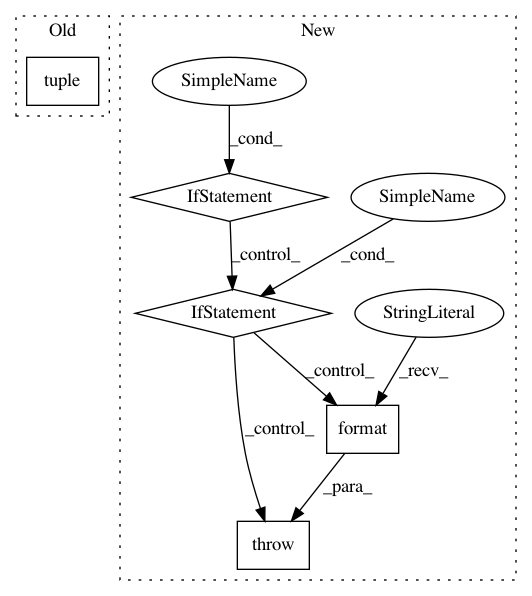

c96d44b85e41fdb14c6495021ef06b4dd26256a1,src/python/pants/engine/rules.py,NodeBuilder,create,#Any#Any#,226
Before Change
serializable_tasks[entry.output_product_type].add(entry)
elif isinstance(entry, (tuple, list)) and len(entry) == 3:
output_type, input_selects, task = entry
serializable_tasks[output_type].add(TaskNodeFactory(tuple(input_selects),
task,
output_type))
else:
After Change
serializable_tasks[entry.output_product_type].add(entry)
elif isinstance(entry, (tuple, list)) and len(entry) == 3:
output_type, input_selectors, task = entry
if isinstance(output_type, Exactly):
constraint = output_type
elif isinstance(output_type, type):
constraint = Exactly(output_type)
else:
raise TypeError("Unexpected product_type type {}, for rule {}".format(output_type, entry))
factory = TaskRule(tuple(input_selectors), task, output_type, constraint)
for kind in constraint.types:
// NB Ensure that interior types from SelectDependencies / SelectProjections work by indexing
// on the list of types in the constraint.
In pattern: SUPERPATTERN
Frequency: 3
Non-data size: 5
Instances
Project Name: pantsbuild/pants
Commit Name: c96d44b85e41fdb14c6495021ef06b4dd26256a1
Time: 2016-09-15
Author: nhoward@twopensource.com
File Name: src/python/pants/engine/rules.py
Class Name: NodeBuilder
Method Name: create
Project Name: stanford-mast/nn_dataflow
Commit Name: 4fb88fdc63292d93ce2fdbbf77a4043f18b2c769
Time: 2017-05-03
Author: mgao12@stanford.edu
File Name: nn_dataflow/Network.py
Class Name: Network
Method Name: add
Project Name: mne-tools/mne-python
Commit Name: 705e0be293dbfd56694ce04ca0b606cce3dbfaea
Time: 2020-02-10
Author: dan@mccloy.info
File Name: mne/utils/check.py
Class Name:
Method Name: _check_pandas_index_arguments